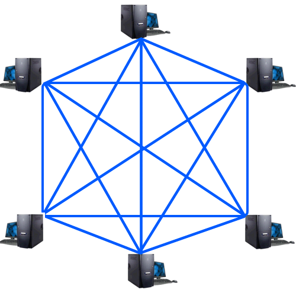
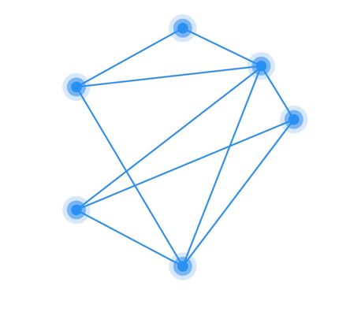

Mesh-Topologie

von Julian Schwertl und Julius Dehner
Gliederung
- Was ist die Mesh Topologie?
- Verwendungszwecke
- Mesh-Typen
- Vor- und Nachteile
- Fazit
Was ist die Mesh Topologie?
- Netzwerk mit zwei oder mehr Pfaden zu einem Gerät → Redundanz
- Nachrichten haben eine TTL
Partielles Mesh

Flooding
- Geräte müssen eigene Daten erkennen und verarbeiten
- Gleichzeitig beschäftigt mit Weiterleitung der Daten anderer Geräte
- Ergo ist jedes Gerät Empfänger und Sender zugleich
Routing
- Verteilung geschieht durch Routing-Tabellen (kürzester Pfad)
- Bei Ausfall einer Netzwerkeinheit wird ein neuer schnellster Weg gesucht
- Aufwändiger!
- Hohe Kosten für gesamtes Netzwerk (im Vergleich zu anderen Topologien)
- Erstellung und Instandhaltung ist aufwändig
- Dafür auch hohe Ausfallsicherheit
- Erweiterung und Modifizierung während des Betriebs möglich
- Mit Wireless-Technologien mittlerweile Einsparung an Kabeln
- Ohne Wireless: redundante Verkabelung
Weitere Aspekte
- Einfache Fehlerfindung und -isolierung
- Hohe Netzwerkauslastung ohne Probleme möglich
Verwendungszweck
- Orte mit wenig komerziellem Internetausbau → Selbstgehostetes Mesh-Internet
- Internet of Things
Fazit
- Größter Kostenpunkt ist die Verkabelung
- Durch moderne Wireless-Technologien wird größter Kostenpunkt irrelevant
- Kommerzielle Nutzung kommt nun vermehrt auf
Bild-Quellen:
Text-Quellen: